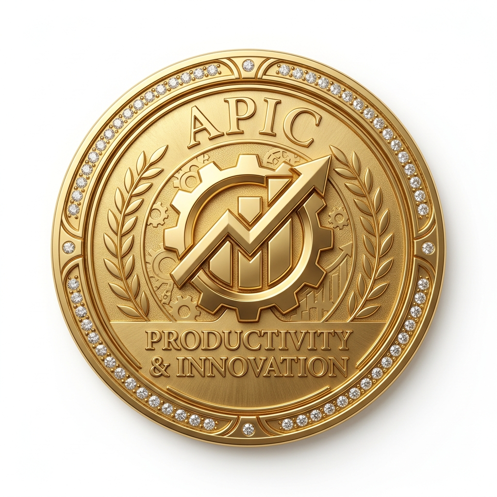
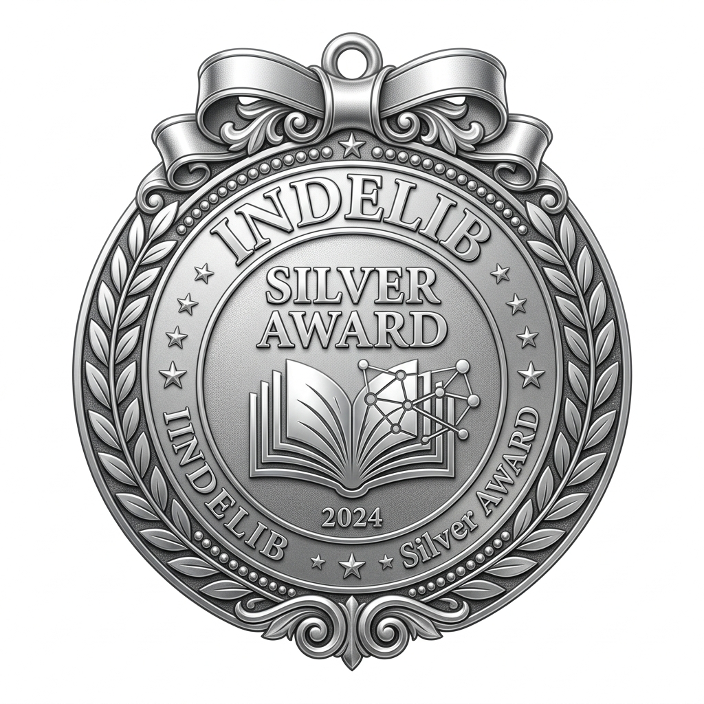
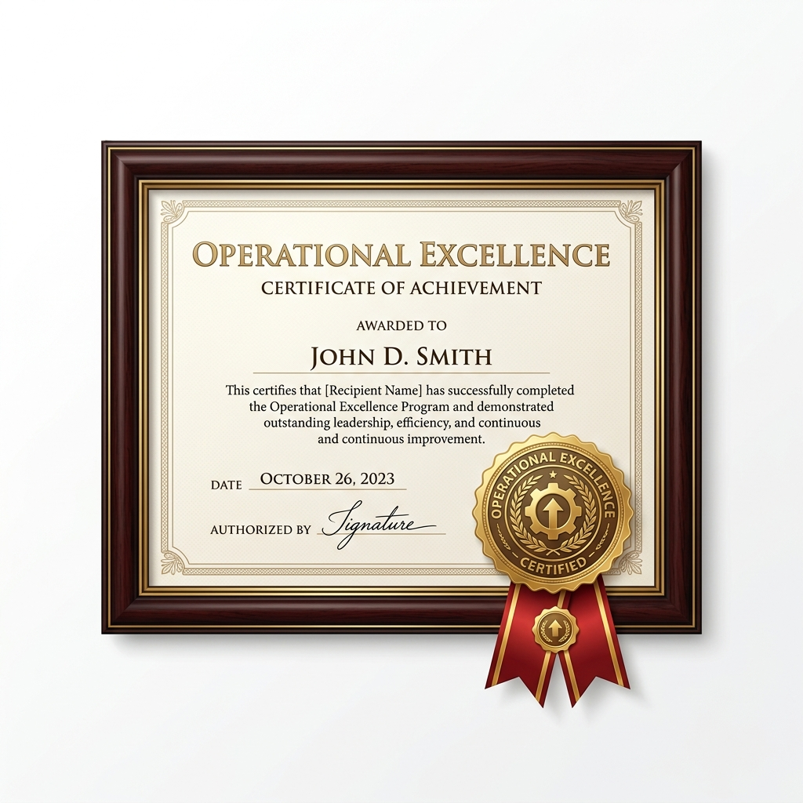
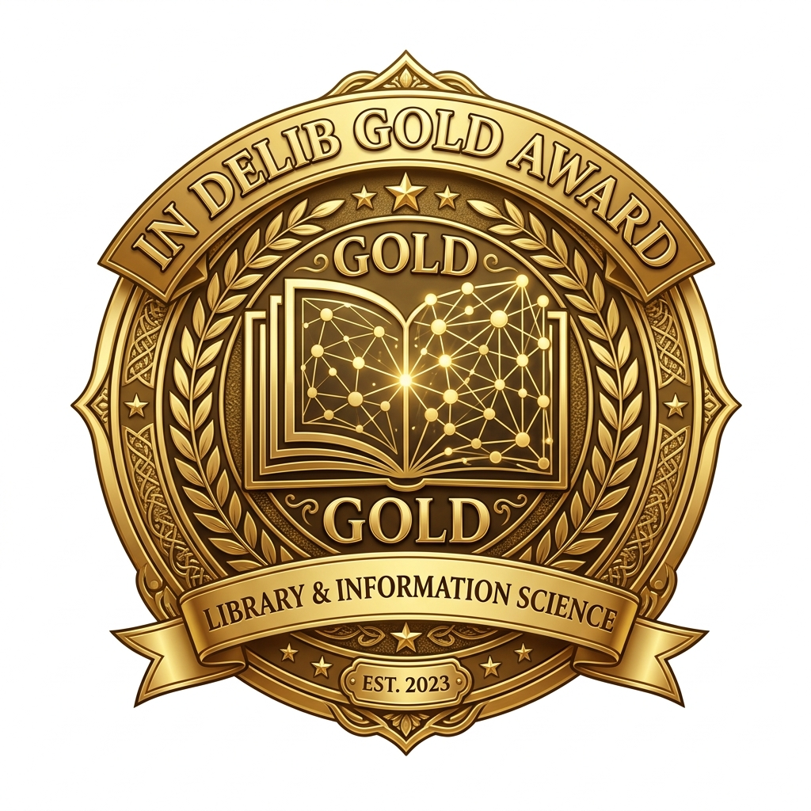

Experience & Skills
Professional Experience
- Senior Library Assistant / Pembantu Pustakawan Kanan (Gred S22) - UiTM Cawangan Pulau Pinang (Nov 2013 - Present)
- Transferred from Bertam Campus to Permatang Pauh Campus (Aug 2018)
- Transferred from Permatang Pauh Campus to Bertam Campus (Jan 2016)
- Promoted to Senior Library Assistant Gred S22 (Nov 2013)
- Library Assistant / Pembantu Perpustakaan - Perpustakaan Tun Abdul Razak (May 2008 - Nov 2013)
- Confirmed in service (Dec 2010)
- First appointment at PTAR (May 2008)
- Computer Technician - Evo And Two Enterprise (Until April 2008)
- Administrative Assistant - Marincore Sdn. Bhd. (2007 - 2008)
- Store Associate - 7-Eleven (2006 - 2007)
Library and IT Projects
- Reference Desk Management System: Developed a system used to manage reference desk services. (Innovation awards at UiTM)
- Integrated Computer Lab Manager: System to manage library computer lab usage, login, tracking, and automation.
- ERA Searcher: Search tool for retrieving ERA-submitted journal information.
- PTAR Virtual Tour Builder: Tool for creating 3D virtual tours using Pannellum.
- Resource Centre System (ReCes): Library system for school resource centres. (Gold Award, InDeLib 2023)
My Skills
Technical Skills Web Development
Software Dev
Databases
Library Systems
|
Soft Skills Communication
Adaptability
Service
|
Achievements & Awards
-

Anugerah Perkhidmatan Cemerlang (APC) UiTM 2013
Awarded on 22 September 2014 -

Silver Award, InDeLib 2025
View Certificate -

Operational Excellence (OE) Certificate
View Certificate -

Gold Award, InDeLib 2023 - Resource Centre System (ReCes)
Event Webpage -
Gold Award, Mini Konvensyen Team Excellence Wilayah Selatan 2016
Related Link: MPC Team Excellence -
Gold Award 3 Stars, APIC 2016
Related Link: MPC APIC -
Gold Award, UiTM Central Zone ICT Innovation Award 2015
Related Link: UiTM KIK Innovation -
Silver Award, UiTM Innovation Award 2015
Related Link: UiTM KIK Innovation
Disclaimer: This website is developed for IML254 Individual Project. All content is for educational purposes only.
Recommended browser: Google Chrome / Microsoft Edge
Recommended resolution: 1366 × 768 and above
Last updated: 10 June 2026
Copyright: © 2026 Muhamad Nasrul Bin Hussain. All rights reserved.